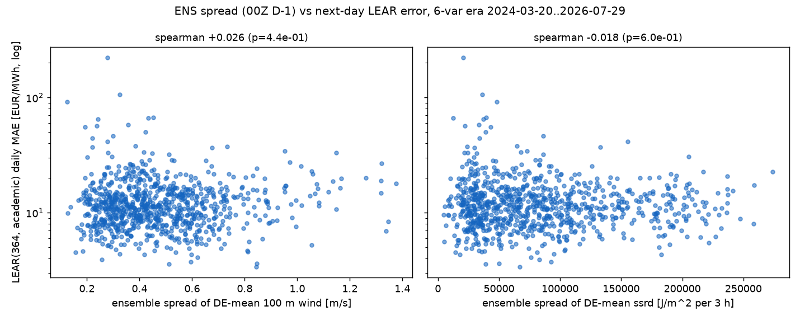

Setup. Same design as the
2023-era study, on the era with
the physically right variables: 100 m wind (hub height) and ssrd
(de-accumulated), from the ECMWF ENS 00Z run of D−1 (leakage-safe).
Daily MAE of LEAR(364, academic exog), run
lear-de-20260811-074202. Full 6-var span:
2024-03-20..2026-07-29, n=862 days (limited by the LEAR forecast
end; ENS archive reaches 2026-08-11).
Pre-registered prediction (2026-08-11, before computation): partial Spearman (hub-height wind spread | wind mean) > +0.15.

| predictor (daily) | Pearson | p | Spearman | p |
|---|---|---|---|---|
| 100 m wind spread | −0.028 | 0.41 | +0.026 | 0.44 |
| ssrd spread | −0.083 | 1.4e-02 | −0.018 | 0.60 |
| 10 m wind spread | −0.023 | 0.50 | +0.030 | 0.37 |
| 2 m temp spread | +0.001 | 0.99 | +0.071 | 0.037 |
| 100 m wind mean (control) | −0.051 | 0.14 | +0.036 | 0.28 |
| 100 m wind spread | wind mean (partial, rank) | −0.002 (p=0.95) | |||
| ssrd spread | ssrd mean (partial, rank) | −0.079 (p=0.020) | |||
| 10 m wind spread | wind mean (partial, rank) | +0.019 (p=0.57) | |||
| 100 m wind-spread quartile | mean MAE | median MAE | days |
|---|---|---|---|
| Q1 (calmest ensemble) | 14.13 | 11.23 | 216 |
| Q2 | 13.72 | 11.28 | 215 |
| Q3 | 12.36 | 10.98 | 215 |
| Q4 (most uncertain) | 12.47 | 11.55 | 216 |
| interim (n=441, to 2025-06) | final (n=862, to 2026-07) | |
|---|---|---|
| raw Spearman, wind100 spread | +0.164 (p=5.5e-04) | +0.026 (p=0.44) |
| partial | wind mean | +0.088 (p=0.065) | −0.002 (p=0.95) |
The added year (2025-06..2026-07) includes the record Rhine drought and eclipse-adjacent scarcity pricing — days where LEAR's errors were driven by fuel/hydrology regime factors invisible to wind ensembles. Whatever thin wind-spread signal existed in the first 441 days did not generalize.
Inputs: _scratch/spread_daily_v2.py (archive
reduction, 6-var era only), _scratch/spread_vs_error_retest.py
(analysis). Daily joined table: daily.csv; quartiles:
mae_by_spread_quartile.csv.